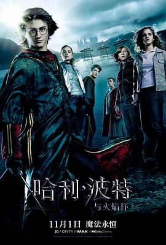

哈利·波特与火焰杯 / Harry Potter and the Goblet of Fire
又名：哈利波特4：火杯的考验(港/台) / 哈利波特：火杯的考验(台) / 哈4
作品信息
| 导演 | 迈克·内威尔 |
| 编剧 | 史蒂夫·克洛夫斯 / J·K·罗琳 |
| 主演 | 丹尼尔·雷德克里夫 / 艾玛·沃森 / 鲁伯特·格林特 / 迈克尔·刚本 / 玛吉·史密斯 / 汤姆·费尔顿 / 蒂莫西·斯波 / 罗伯特·帕丁森 / 梁佩诗 / 大卫·田纳特 / 马克·威廉姆斯 / 埃里克·赛克斯 / 詹姆斯·菲尔普斯 / 奥利弗·菲尔普斯 / 邦妮·怀特 / 克蕾曼丝·波西 / 加里·奥德曼 / 杰夫·劳勒 / 詹森·艾萨克 / 斯坦尼斯拉夫·雅涅夫斯基 / 罗伯特·哈迪 / 阿什莉·阿尔图斯 / 亚历克斯·帕尔墨 / 罗格·洛伊德-派克 / 希拉·艾伦 / 苏·艾略特 / 大卫·斯特恩 / 玛格里·梅森 / 马修·刘易斯 / 罗彼·考特拉尼 / 威廉姆·麦灵 / 大卫·布拉德利 / 戴文·穆雷 / 艾芙珊·阿扎德 / 沃里克·戴维斯 / 弗朗西斯·德·拉·图瓦 / 谢发丽·裘德胡里 / 安吉拉珂·曼蒂 / 艾伦·瑞克曼 / 普雷德拉格·别拉茨 / 托尔加·塞弗尔 / 布莱丹·格里森 / 阿尔弗雷德·伊诺奇 / 路易·多伊尔 / 杰米·威莱特 / 乔什·赫德曼 / 夏洛特·斯凯奇 / 米兰达·理查森 / 罗伯特·威尔福特 / 蒂亚娜·本杰明 / 亨利·劳埃德-休斯 / 贾维斯·考科尔 / 强尼·格林伍德 / 菲尔·塞尔维 / 史蒂夫·麦基 / 杰森·巴克尔 / 斯蒂夫·克雷登 / 雪莉·亨德森 / 拉尔夫·费因斯 / 阿德里安·劳林斯 / 杰拉丁·萨莫维尔 / 拉斯科·阿特金斯 / 杰克·拜格利 / 葛蕾·贝拉玛西娜 / 保罗·戴维斯 / 巴里·道登 / 娜塔莉·哈拉姆 |
| 类型 | 悬疑 / 奇幻 / 冒险 |
| 制片国家/地区 | 英国 / 美国 |
| 语言 | 英语 / 法语 |
| 上映日期 | 2005-11-18(中国大陆) / 2024-11-01(中国大陆重映) / 2005-11-06(英国) |
| 片长 | 157分钟 |
| IMDb | tt0330373 |
最后一次看到是 2026-08-12T21:13:19+08:00 · 豆瓣原页